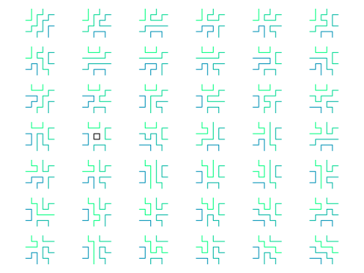

Fully packed loops¶
AUTHORS:
Vincent Knight, James Campbell, Kevin Dilks, Emily Gunawan (2015): Initial version
Vincent Delecroix (2017): cleaning and enhanced plotting function
- class sage.combinat.fully_packed_loop.FullyPackedLoop(parent, generator)¶
Bases:
sage.structure.element.ElementA class for fully packed loops.
A fully packed loop is a collection of non-intersecting lattice paths on a square grid such that every vertex is part of some path, and the paths are either closed internal loops or have endpoints corresponding to alternate points on the boundary [Pro2001]. They are known to be in bijection with alternating sign matrices.
See also
To each fully packed loop, we assign a link pattern, which is the non-crossing matching attained by seeing which points on the boundary are connected by open paths in the fully packed loop.
We can create a fully packed loop using the corresponding alternating sign matrix and also extract the link pattern:
sage: A = AlternatingSignMatrix([[0, 0, 1], [0, 1, 0], [1, 0, 0]]) sage: fpl = FullyPackedLoop(A) sage: fpl.link_pattern() [(1, 4), (2, 3), (5, 6)] sage: fpl | | | | + -- + + | | | | -- + + + -- | | | | + + -- + | | | | sage: B = AlternatingSignMatrix([[1, 0, 0], [0, 1, 0], [0, 0, 1]]) sage: fplb = FullyPackedLoop(B) sage: fplb.link_pattern() [(1, 6), (2, 5), (3, 4)] sage: fplb | | | | + + -- + | | | | -- + + + -- | | | | + -- + + | | | |
The class also has a plot method:
sage: fpl.plot() Graphics object consisting of 3 graphics primitives
which gives:
Note that we can also create a fully packed loop from a six vertex model configuration:
sage: S = SixVertexModel(3, boundary_conditions='ice').from_alternating_sign_matrix(A) sage: S ^ ^ ^ | | | --> # -> # -> # <-- ^ ^ | | | V --> # -> # <- # <-- ^ | | | V V --> # <- # <- # <-- | | | V V V sage: fpl = FullyPackedLoop(S) sage: fpl | | | | + -- + + | | | | -- + + + -- | | | | + + -- + | | | |
Once we have a fully packed loop we can obtain the corresponding alternating sign matrix:
sage: fpl.to_alternating_sign_matrix() [0 0 1] [0 1 0] [1 0 0]
Here are some more examples using bigger ASMs:
sage: A = AlternatingSignMatrix([[0,1,0,0],[0,0,1,0],[1,-1,0,1],[0,1,0,0]]) sage: S = SixVertexModel(4, boundary_conditions='ice').from_alternating_sign_matrix(A) sage: fpl = FullyPackedLoop(S) sage: fpl.link_pattern() [(1, 2), (3, 6), (4, 5), (7, 8)] sage: fpl | | | | + -- + -- + + -- | | -- + + -- + -- + | | | | + + + -- + -- | | | | | | -- + + + -- + | | | | sage: m = AlternatingSignMatrix([[0,0,1,0,0,0], ....: [1,0,-1,0,1,0], ....: [0,0,0,1,0,0], ....: [0,1,0,0,-1,1], ....: [0,0,0,0,1,0], ....: [0,0,1,0,0,0]]) sage: fpl = FullyPackedLoop(m) sage: fpl.link_pattern() [(1, 12), (2, 7), (3, 4), (5, 6), (8, 9), (10, 11)] sage: fpl | | | | | | + -- + + + -- + + -- | | | | | | | | -- + -- + + + -- + -- + | | + -- + + -- + -- + + -- | | | | | | | | -- + + + -- + + + | | | | | | | | | | + -- + + -- + + + -- | | | | -- + + -- + -- + + -- + | | | | | | sage: m = AlternatingSignMatrix([[0,1,0,0,0,0,0], ....: [1,-1,0,0,1,0,0], ....: [0,0,0,1,0,0,0], ....: [0,1,0,0,-1,1,0], ....: [0,0,0,0,1,0,0], ....: [0,0,1,0,-1,0,1], ....: [0,0,0,0,1,0,0]]) sage: fpl = FullyPackedLoop(m) sage: fpl.link_pattern() [(1, 2), (3, 4), (5, 6), (7, 8), (9, 14), (10, 11), (12, 13)] sage: fpl | | | | | | | | + -- + -- + + -- + + -- + | | | | -- + -- + -- + + -- + -- + + -- | | | | + -- + + -- + -- + + -- + | | | | | | | | -- + + + -- + + + + -- | | | | | | | | | | | | + -- + + -- + + + -- + | | | | -- + + -- + -- + + + -- + -- | | | | | | | | + -- + + -- + + + -- + | | | | | | | |
Gyration on an alternating sign matrix/fully packed loop
fplof the link pattern corresponding tofpl:sage: ASMs = AlternatingSignMatrices(3).list() sage: ncp = FullyPackedLoop(ASMs[1]).link_pattern() # fpl's gyration orbit size is 2 sage: rotated_ncp=[] sage: for (a,b) in ncp: ....: for i in range(5): ....: a,b=a%6+1,b%6+1; ....: rotated_ncp.append((a,b)) sage: PerfectMatching(ASMs[1].gyration().to_fully_packed_loop().link_pattern()) ==\ ....: PerfectMatching(rotated_ncp) True sage: fpl = FullyPackedLoop(ASMs[0]) sage: ncp = fpl.link_pattern() # fpl's gyration size is 3 sage: rotated_ncp=[] sage: for (a,b) in ncp: ....: for i in range(5): ....: a,b=a%6+1,b%6+1; ....: rotated_ncp.append((a,b)) sage: PerfectMatching(ASMs[0].gyration().to_fully_packed_loop().link_pattern()) ==\ ....: PerfectMatching(rotated_ncp) True sage: mat = AlternatingSignMatrix([[0,0,1,0,0,0,0],[1,0,-1,0,1,0,0], ....: [0,0,1,0,0,0,0],[0,1,-1,0,0,1,0],[0,0,1,0,0,0,0],[0,0,0,1,0,0,0],[0,0,0,0,0,0,1]]) sage: fpl = FullyPackedLoop(mat) # n=7 sage: ncp = fpl.link_pattern() sage: rotated_ncp=[] sage: for (a,b) in ncp: ....: for i in range(13): ....: a,b=a%14+1,b%14+1; ....: rotated_ncp.append((a,b)) sage: PerfectMatching(mat.gyration().to_fully_packed_loop().link_pattern()) ==\ ....: PerfectMatching(rotated_ncp) True sage: mat = AlternatingSignMatrix([[0,0,0,1,0,0], [0,0,1,-1,1,0], ....: [0,1,0,0,-1,1], [1,0,-1,1,0,0], [0,0,1,0,0,0], [0,0,0,0,1,0]]) sage: fpl = FullyPackedLoop(mat) # n =6 sage: ncp = fpl.link_pattern() sage: rotated_ncp=[] sage: for (a,b) in ncp: ....: for i in range(11): ....: a,b=a%12+1,b%12+1; ....: rotated_ncp.append((a,b)) sage: PerfectMatching(mat.gyration().to_fully_packed_loop().link_pattern()) ==\ ....: PerfectMatching(rotated_ncp) True
More examples:
We can initiate a fully packed loop using an alternating sign matrix:
sage: A = AlternatingSignMatrix([[0, 0, 1], [0, 1, 0], [1, 0, 0]]) sage: fpl = FullyPackedLoop(A) sage: fpl | | | | + -- + + | | | | -- + + + -- | | | | + + -- + | | | | sage: FullyPackedLoops(3)(A) == fpl True
We can also input a matrix:
sage: FullyPackedLoop([[0, 0, 1], [0, 1, 0], [1, 0, 0]]) | | | | + -- + + | | | | -- + + + -- | | | | + + -- + | | | | sage: FullyPackedLoop([[0, 0, 1], [0, 1, 0], [1, 0, 0]]) ==\ ....: FullyPackedLoops(3)([[0, 0, 1], [0, 1, 0], [1, 0, 0]]) True
Otherwise we initiate a fully packed loop using a six vertex model:
sage: S = SixVertexModel(3, boundary_conditions='ice').from_alternating_sign_matrix(A) sage: fpl = FullyPackedLoop(S) sage: fpl | | | | + -- + + | | | | -- + + + -- | | | | + + -- + | | | | sage: FullyPackedLoops(3)(S) == FullyPackedLoop(S) True sage: fpl.six_vertex_model().to_alternating_sign_matrix() [0 0 1] [0 1 0] [1 0 0]
We can also input the matrix associated to a six vertex model:
sage: SixVertexModel(2)([[3,1],[5,3]]) ^ ^ | | --> # <- # <-- | ^ V | --> # -> # <-- | | V V sage: FullyPackedLoop([[3,1],[5,3]]) | | + + -- | | | | -- + + | | sage: FullyPackedLoops(2)([[3,1],[5,3]]) == FullyPackedLoop([[3,1],[5,3]]) True
Note that the matrix corresponding to a six vertex model without the ice boundary condition is not allowed:
sage: SixVertexModel(2)([[3,1],[5,5]]) ^ ^ | | --> # <- # <-- | ^ V V --> # -> # --> | | V V sage: FullyPackedLoop([[3,1],[5,5]]) Traceback (most recent call last): ... ValueError: invalid alternating sign matrix sage: FullyPackedLoops(2)([[3,1],[5,5]]) Traceback (most recent call last): ... ValueError: invalid alternating sign matrix
Note that if anything else is used to generate the fully packed loop an error will occur:
sage: fpl = FullyPackedLoop(5) Traceback (most recent call last): ... ValueError: invalid alternating sign matrix sage: fpl = FullyPackedLoop((1, 2, 3)) Traceback (most recent call last): ... ValueError: The alternating sign matrices must be square sage: SVM = SixVertexModel(3)[0] sage: FullyPackedLoop(SVM) Traceback (most recent call last): ... ValueError: invalid alternating sign matrix
REFERENCES:
- gyration()¶
Return the fully packed loop obtained by applying gyration to the alternating sign matrix in bijection with
self.Gyration was first defined in [Wie2000] as an action on fully-packed loops.
EXAMPLES:
sage: A = AlternatingSignMatrix([[1, 0, 0],[0, 1, 0],[0, 0, 1]]) sage: fpl = FullyPackedLoop(A) sage: fpl.gyration().to_alternating_sign_matrix() [0 0 1] [0 1 0] [1 0 0] sage: asm = AlternatingSignMatrix([[0, 0, 1],[1, 0, 0],[0, 1, 0]]) sage: f = FullyPackedLoop(asm) sage: f.gyration().to_alternating_sign_matrix() [0 1 0] [0 0 1] [1 0 0]
- link_pattern()¶
Return a link pattern corresponding to a fully packed loop.
Here we define a link pattern \(LP\) to be a partition of the list \([1, ..., 2k]\) into 2-element sets (such a partition is also known as a perfect matching) such that the following non-crossing condition holds: Let the numbers \(1, ..., 2k\) be written on the perimeter of a circle. For every 2-element set \((a,b)\) of the partition \(LP\), draw an arc linking the two numbers \(a\) and \(b\). We say that \(LP\) is non-crossing if every arc can be drawn so that no two arcs intersect.
Since every endpoint of a fully packed loop \(fpl\) is connected to a different endpoint, there is a natural surjection from the fully packed loops on an nxn grid onto the link patterns on the list \([1, \dots, 2n]\). The pairs of connected endpoints of a fully packed loop \(fpl\) correspond to the 2-element tuples of the corresponding link pattern.
See also
EXAMPLES:
We can extract the underlying link pattern (a non-crossing partition) from a fully packed loop:
sage: A = AlternatingSignMatrix([[0, 1, 0], [1, -1, 1], [0, 1, 0]]) sage: fpl = FullyPackedLoop(A) sage: fpl.link_pattern() [(1, 2), (3, 6), (4, 5)] sage: B = AlternatingSignMatrix([[1, 0, 0], [0, 1, 0], [0, 0, 1]]) sage: fpl = FullyPackedLoop(B) sage: fpl.link_pattern() [(1, 6), (2, 5), (3, 4)]
Gyration on an alternating sign matrix/fully packed loop
fplcorresponds to a rotation (i.e. a becomes a-1 mod 2n) of the link pattern corresponding tofpl:sage: ASMs = AlternatingSignMatrices(3).list() sage: ncp = FullyPackedLoop(ASMs[1]).link_pattern() sage: rotated_ncp=[] sage: for (a,b) in ncp: ....: for i in range(5): ....: a,b=a%6+1,b%6+1; ....: rotated_ncp.append((a,b)) sage: PerfectMatching(ASMs[1].gyration().to_fully_packed_loop().link_pattern()) ==\ ....: PerfectMatching(rotated_ncp) True sage: fpl = FullyPackedLoop(ASMs[0]) sage: ncp = fpl.link_pattern() sage: rotated_ncp=[] sage: for (a,b) in ncp: ....: for i in range(5): ....: a,b=a%6+1,b%6+1; ....: rotated_ncp.append((a,b)) sage: PerfectMatching(ASMs[0].gyration().to_fully_packed_loop().link_pattern()) ==\ ....: PerfectMatching(rotated_ncp) True sage: mat = AlternatingSignMatrix([[0,0,1,0,0,0,0],[1,0,-1,0,1,0,0],[0,0,1,0,0,0,0], ....: [0,1,-1,0,0,1,0],[0,0,1,0,0,0,0],[0,0,0,1,0,0,0],[0,0,0,0,0,0,1]]) sage: fpl = FullyPackedLoop(mat) # n=7 sage: ncp = fpl.link_pattern() sage: rotated_ncp=[] sage: for (a,b) in ncp: ....: for i in range(13): ....: a,b=a%14+1,b%14+1; ....: rotated_ncp.append((a,b)) sage: PerfectMatching(mat.gyration().to_fully_packed_loop().link_pattern()) ==\ ....: PerfectMatching(rotated_ncp) True sage: mat = AlternatingSignMatrix([[0,0,0,1,0,0], [0,0,1,-1,1,0], [0,1,0,0,-1,1], [1,0,-1,1,0,0], ....: [0,0,1,0,0,0], [0,0,0,0,1,0]]) sage: fpl = FullyPackedLoop(mat) sage: ncp = fpl.link_pattern() sage: rotated_ncp=[] sage: for (a,b) in ncp: ....: for i in range(11): ....: a,b=a%12+1,b%12+1; ....: rotated_ncp.append((a,b)) sage: PerfectMatching(mat.gyration().to_fully_packed_loop().link_pattern()) ==\ ....: PerfectMatching(rotated_ncp) True
- plot(link=True, loop=True, loop_fill=False, **options)¶
Return a graphical object of the Fully Packed Loop.
Each option can be specified separately for links (the curves that join boundary points) and the loops. In order to do so, you need to prefix its name with either
'link_'or'loop_'. As an example, settingcolor='red'will color both links and loops in red while settinglink_color='red'will only apply the color option for the links.INPUT:
link,loop- (boolean, defaultTrue) whether to plot the links or the loopscolor,link_color,loop_color- (optional, a string or a RGB triple)colors,link_colors,loop_colors- (optional, list) a list of colorscolor_map,link_color_map,loop_color_map- (string, optional) a name of a matplotlib color map for the link or the looplink_color_randomize- (boolean, defaultFalse) whenlink_colorsorlink_color_mapis specified it randomizes its order. Setting this option toTruemakes it unlikely to have two neighboring links with the same color.loop_fill- (boolean, optional) whether to fill the interior of the loops
EXAMPLES:
To plot the fully packed loop associated to the following alternating sign matrix
\[\begin{split}\begin{pmatrix} 0&1&1 \\ 1&-1&1 \\ 0&1&0 \end{pmatrix}\end{split}\]simply do:
sage: A = AlternatingSignMatrix([[0, 1, 0], [1, -1, 1], [0, 1, 0]]) sage: fpl = FullyPackedLoop(A) sage: fpl.plot() Graphics object consisting of 3 graphics primitives
The resulting graphics is as follows
You can also have the three links in different colors with:
sage: A = AlternatingSignMatrix([[0, 1, 0], [1, -1, 1], [0, 1, 0]]) sage: fpl = FullyPackedLoop(A) sage: fpl.plot(link_color_map='rainbow') Graphics object consisting of 3 graphics primitives
You can plot the 42 fully packed loops of size \(4 \times 4\) using:
sage: G = [fpl.plot(link_color_map='winter', loop_color='black') for fpl in FullyPackedLoops(4)] sage: graphics_array(G, 7, 6) Graphics Array of size 7 x 6
 Here is an example of a \(20 \times 20\) fully packed loop:
sage: s = "00000000000+0000000000000000+00-0+00000000000+00-00+0-+00000\ ....: 0000+-00+00-+00000000+00-0000+0000-+00000000+000-0+0-+0-+000\ ....: 000+-000+-00+0000000+-+-000+00-+0-000+000+-000+-0+0000000-0+\ ....: 0000+0-+0-+00000-+00000+-+0-0+-00+0000000000+-0000+0-00+0000\ ....: 000000+0-000+000000000000000+0000-00+00000000+0000-000+00000\ ....: 00+0-00+0000000000000000+-0000+000000-+000000+00-0000+-00+00\ ....: 00000000+-0000+00000000000000+0000000000" sage: a = matrix(20, [{'0':0, '+':1, '-': -1}[i] for i in s]) sage: fpl = FullyPackedLoop(a) sage: fpl.plot(loop_fill=True, loop_color_map='rainbow') Graphics object consisting of 27 graphics primitives
- six_vertex_model()¶
Return the underlying six vertex model configuration.
EXAMPLES:
sage: B = AlternatingSignMatrix([[1, 0, 0], [0, 1, 0], [0, 0, 1]]) sage: fpl = FullyPackedLoop(B) sage: fpl | | | | + + -- + | | | | -- + + + -- | | | | + -- + + | | | | sage: fpl.six_vertex_model() ^ ^ ^ | | | --> # <- # <- # <-- | ^ ^ V | | --> # -> # <- # <-- | | ^ V V | --> # -> # -> # <-- | | | V V V
- to_alternating_sign_matrix()¶
Return the alternating sign matrix corresponding to this class.
See also
EXAMPLES:
sage: A = AlternatingSignMatrix([[0, 1, 0], [1, -1, 1], [0, 1, 0]]) sage: S = SixVertexModel(3, boundary_conditions='ice').from_alternating_sign_matrix(A) sage: fpl = FullyPackedLoop(S) sage: fpl.to_alternating_sign_matrix() [ 0 1 0] [ 1 -1 1] [ 0 1 0] sage: A = AlternatingSignMatrix([[0,1,0,0],[0,0,1,0],[1,-1,0,1],[0,1,0,0]]) sage: S = SixVertexModel(4, boundary_conditions='ice').from_alternating_sign_matrix(A) sage: fpl = FullyPackedLoop(S) sage: fpl.to_alternating_sign_matrix() [ 0 1 0 0] [ 0 0 1 0] [ 1 -1 0 1] [ 0 1 0 0]
{kind=link}
{kind=link}
{kind=link}
{kind=link}
{kind=link}
- class sage.combinat.fully_packed_loop.FullyPackedLoops(n)¶
Bases:
sage.structure.parent.Parent,sage.structure.unique_representation.UniqueRepresentationClass of all fully packed loops on an \(n \times n\) grid.
They are known to be in bijection with alternating sign matrices.
See also
INPUT:
n– the number of row (and column) or grid
EXAMPLES:
This will create an instance to manipulate the fully packed loops of size 3:
sage: FPLs = FullyPackedLoops(3) sage: FPLs Fully packed loops on a 3x3 grid sage: FPLs.cardinality() 7
When using the square ice model, it is known that the number of configurations is equal to the number of alternating sign matrices:
sage: M = FullyPackedLoops(1) sage: len(M) 1 sage: M = FullyPackedLoops(4) sage: len(M) 42 sage: all(len(SixVertexModel(n, boundary_conditions='ice')) ....: == FullyPackedLoops(n).cardinality() for n in range(1, 7)) True
- Element¶
alias of
FullyPackedLoop
- cardinality()¶
Return the cardinality of
self.The number of fully packed loops on \(n \times n\) grid
\[\prod_{k=0}^{n-1} \frac{(3k+1)!}{(n+k)!} = \frac{1! 4! 7! 10! \cdots (3n-2)!}{n! (n+1)! (n+2)! (n+3)! \cdots (2n-1)!}.\]EXAMPLES:
sage: [AlternatingSignMatrices(n).cardinality() for n in range(11)] [1, 1, 2, 7, 42, 429, 7436, 218348, 10850216, 911835460, 129534272700]
- size()¶
Return the size of the matrices in
self.